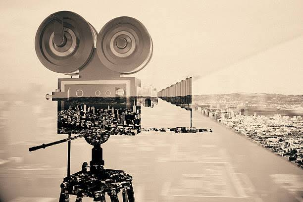
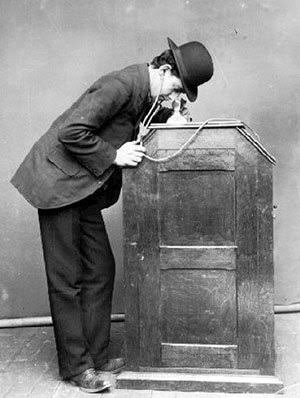
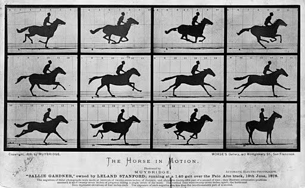
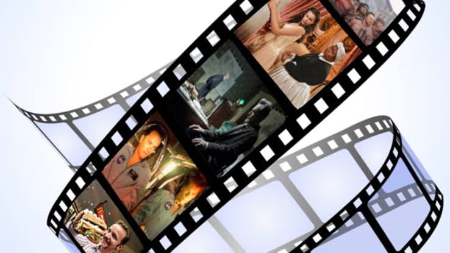

A film-also called a movie, motion picture, moving picture, picture, photoplay or
(slang) flick -is a work of visual art that simulates experiences and otherwise
communicates ideas,stories, perceptions, feelings, beauty,or atmosphere through
the use of moving images. These images are generally accompanied by sound and,
more rarely, other sensory stimulations.[1] The word "cinema", short for
cinematography, is often used to refer to filmmaking and the film industry,and
to the art form that is the result of it.
The moving images of a film are created by photographing actual scenes with a
motion-picture camera, by photographing drawings or miniature models using
traditional animation techniques, by means of CGI and computer animation, or
by a combination of some or all of these techniques, and other visual effects.
Before the introduction of digital production, series of still images were recorded
on a strip of chemically sensitized celluloid (photographic film stock), usually at
the rate of 24 frames per second. The images are transmitted through a movie projector
at the same rate as they were recorded, with a Geneva drive ensuring that each frame
remains still during its short projection time. A rotating shutter causes stroboscopic
intervals of darkness, but the viewer does not notice the interruptions due to
flicker fusion. The apparent motion on the screen is the result of the fact that the
visual sense cannot discern the individual images at high speeds, so the impressions
of the images blend with the dark intervals and are thus linked together to produce the
illusion of one moving image. An analogous optical soundtrack (a graphic recording of the
spoken words, music and other sounds) runs along a portion of the film exclusively reserved
for it, and was not projected.Contemporary films are usually fully digital through the entire
process of production, distribution, and exhibition.

By the end of the 1880s, the introduction of lengths of celluloid photographic film and
the invention of motion picture cameras, which could photograph a rapid sequence of images
using only one lens, allowed action to be captured and stored on a single compact reel of
film.Movies were initially shown publicly to one person at a time through "peep show" devices
such as the Electrotachyscope, Kinetoscope and the Mutoscope. Not much later, exhibitors
managed to project films on large screens for theatre audiences.The first public screenings of
films at which admission was charged were made in 1895 by the American Woodville Latham and his
sons, using films produced by their Eidoloscope company,[4] and by the - arguably better known-
French brothers Auguste and Louis Lumière with ten of their own productions.[citation needed]
Private screenings had preceded these by several months, with Latham's slightly predating the
Lumière brothers'.[citation needed]

"Film theory" seeks to develop concise and systematic concepts that apply to the study of film
as art. The concept of film as an art-form began in 1911 with Ricciotto Canudo's manifest The
Birth of the Sixth Art. The Moscow Film School, the oldest film school in the world, was founded
in 1919, in order to teach about and research film theory. Formalist film theory, led by Rudolf
Arnheim, Béla Balázs, and Siegfried Kracauer, emphasized how film differed from reality and thus
could be considered a valid fine art. André Bazin reacted against this theory by arguing that
film's artistic essence lay in its ability to mechanically reproduce reality, not in its
differences from reality, and this gave rise to realist theory. More recent analysis spurred
by Jacques Lacan's psychoanalysis and Ferdinand de Saussure's semiotics among other things
has given rise to psychoanalytic film theory, structuralist film theory, feminist film theory,
and others. On the other hand, critics from the analytical philosophy tradition, influenced
by Wittgenstein, try to clarify misconceptions used in theoretical studies and produce analysis
of a film's vocabulary and its link to a form of life.

The making and showing of motion pictures became a source of profit almost as soon as the
process was invented. Upon seeing how successful their new invention, and its product, was
in their native France, the Lumières quickly set about touring the Continent to exhibit the
first films privately to royalty and publicly to the masses. In each country, they would
normally add new, local scenes to their catalogue and, quickly enough, found local entrepreneurs
in the various countries of Europe to buy their equipment and photograph, export, import, and
screen additional product commercially. The Oberammergau Passion Play of 1898[7] was the first
commercial motion picture ever produced. Other pictures soon followed, and motion pictures
became a separate industry that overshadowed the vaudeville world. Dedicated theaters and
companies formed specifically to produce and distribute films, while motion picture actors
became major celebrities and commanded huge fees for their performances. By 1917 Charlie
Chaplin had a contract that called for an annual salary of one million dollars. From 1931
to 1956, film was also the only image storage and playback system for television programming
until the introduction of videotape recorders.
